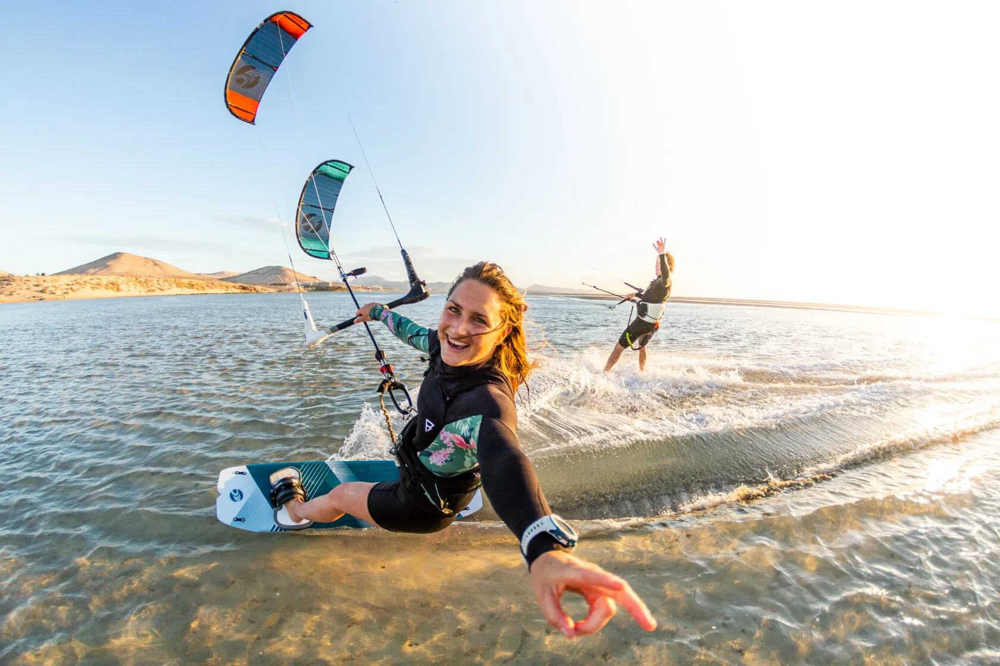
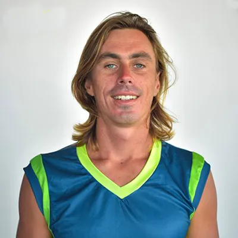
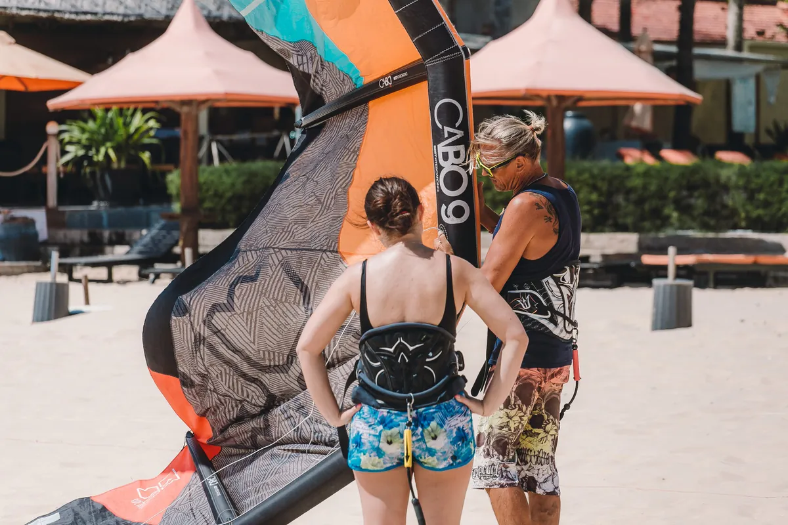
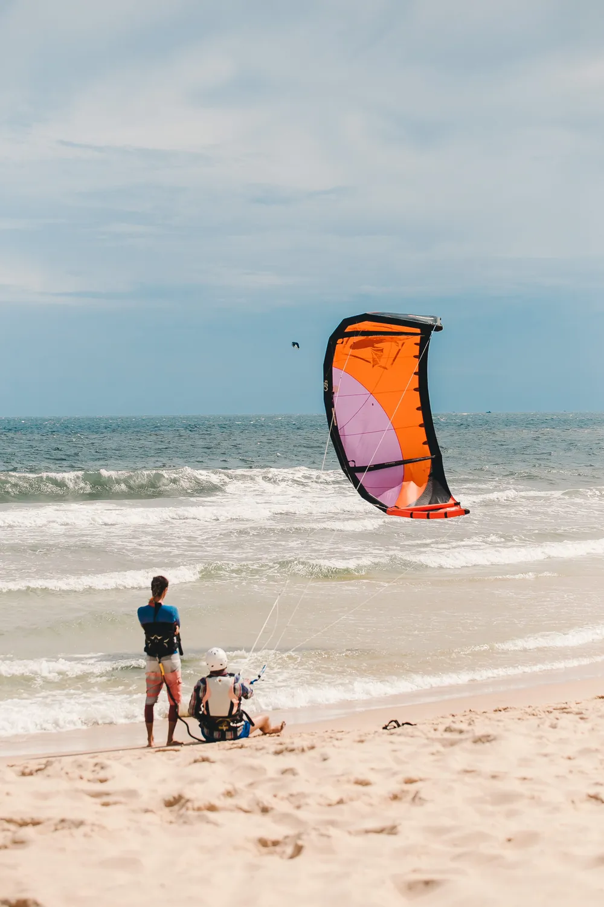
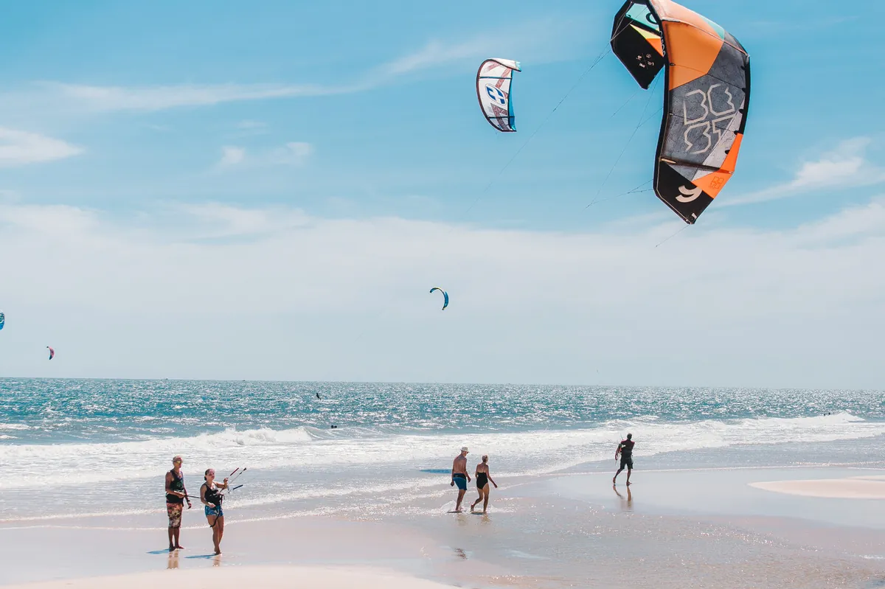

Ознакомительный урок
Практика1 час
Теория10 минут
- Для тех, кто пока сомневается и хочет попробовать
- Общее понимание кайтсерфинга
- Техника безопасности
- Базовое управление кайтом
6 000 ₽
Записаться

Профессиональное обучение кайтбордингу по международному стандарту IKO. Современное и безопасное оборудование, личный инструктор и сертификат после курса.
с 2010
года учим кататься на кайте
4 000
выпускников прошли обучение
IKO
международный стандарт обучения
Обучение
Выберите курс и запишитесь на занятие. Всё оборудование входит в стоимость, теория чередуется с практикой.
Практика1 час
Теория10 минут
Практика2 часа
Теориявместе с практикой
Практика6 часов
Теориявместе с практикой
Прокат
Современные кайты и доски Naish, Cabrinha, Slingshot и North. Размеры можно менять в процессе катания.
Комплект целикомкайт + доска + трапеция + гидрокостюм
2 800 ₽Комплект целикомкайт + доска + трапеция + гидрокостюм
8 000 ₽Почему мы
Наша главная цель — сделать обучение интересным и безопасным.
Мы не просто научим вас кататься, а познакомим с миром кайтбординга.
Методика отточена: вы не тратите время на бесполезные упражнения, каждый шаг продуман.
Он как права на автомобиль: с ним вам дадут кайт в прокат в любой стране.

Инструктор
Главный инструктор школы
Инструктор IKO Level 3, более 1 000 часов обучения. Учит кайтбордингу с 2010 года: летом в Петербурге, зимой во Вьетнаме.
Фото



Отзывы
«Пошёл учиться в школу «Лето» по наводке друзей и в итоге не пожалел. Теорию преподают в интересном, не скучном формате и показывают примеры на видео.»
«Саш, ты лучший учитель, мои достижения благодаря тебе! Я уже не надеялась, что у меня есть шансы поехать.»
«Школа просто супер, шикарная атмосфера, классные и профессиональные инструкторы. Просто рай для кайтсерферов. Рекомендую!»
Вопросы
Ознакомительный урок (1 час) — 6 000 ₽, урок 2 часа — 10 000 ₽, базовый курс (6 часов) — 30 000 ₽. Оборудование входит в стоимость.
На Сестрорецком пляже, Курортная улица, Сестрорецк — на берегу Финского залива. Занимаемся в ветреные дни.
Ничего. Всё необходимое оборудование предоставляет школа, и оно входит в стоимость обучения.
Да, конечно. Кайт держится за счёт веса тела и трапеции, а не силы рук. Дети и девушки легко проходят обучение и потом катаются сами.
Да, можно почитать материалы или посмотреть видеоуроки заранее — это хорошо ускоряет обучение.
Да. Вы можете завершить обучение у нас на выгодных условиях, не проходя заново уже пройденные часы. Позвоните нам, и мы всё расскажем.
Возможно, материалов в интернете хватает. Но если учесть потраченное время, риски для здоровья и окружающих и покупку оборудования, самостоятельное обучение теряет смысл.
Контакты
Позвоните или напишите — подберём день с ветром и курс под ваш уровень. Занятия проходят в ветреные дни.
Режим работы
Ветреные дни